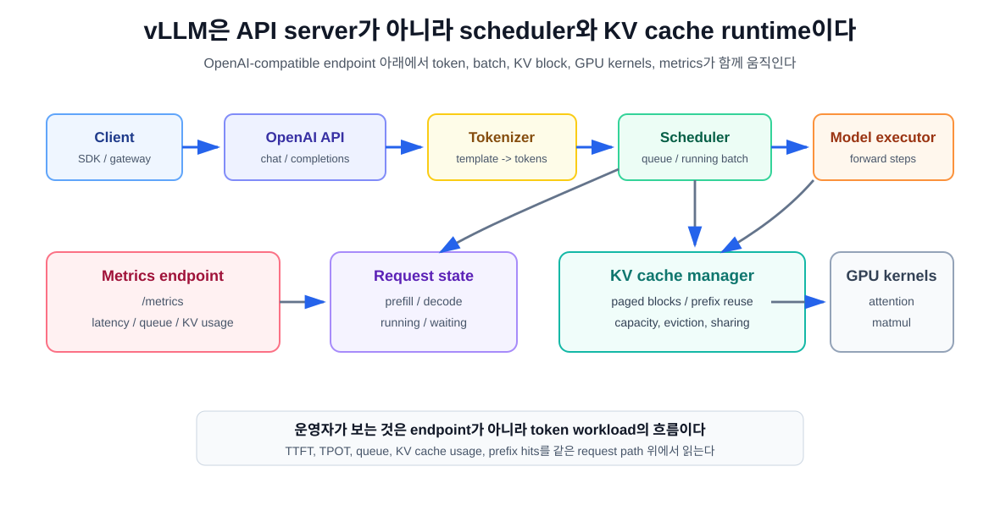
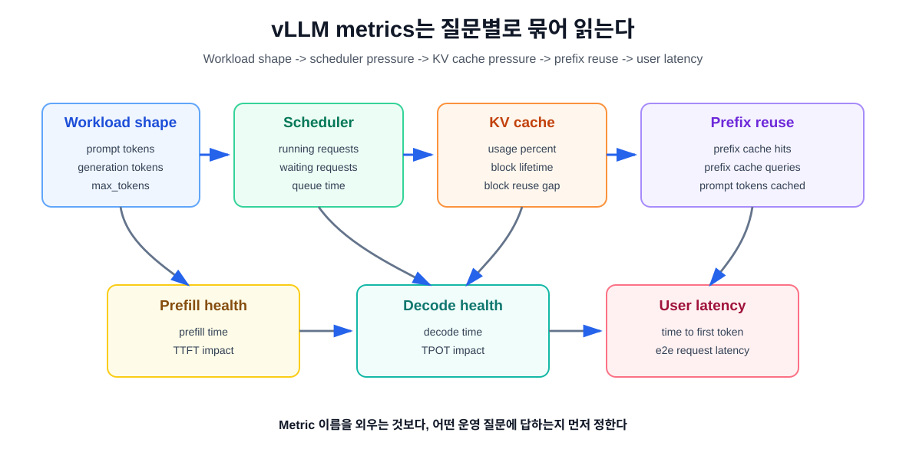

9장. vLLM: general-purpose LLM serving baseline¶
6장에서 우리는 OpenAI-compatible endpoint를 만들었고, 7장에서 TTFT, TPOT, throughput, p95를 읽는 법을 배웠다. 8장에서는 quantization이 memory와 latency를 어떻게 바꾸는지 봤다. 이제 질문이 바뀐다.
여러 serving runtime 중에서 왜 vLLM을 먼저 기준선으로 삼는가?
이 장의 답은 "vLLM이 항상 최고라서"가 아니다. vLLM은 LLM serving의 핵심 병목을 비교적 직접 보여 주는 좋은 baseline이다. Scheduler, KV cache, PagedAttention, continuous batching, prefix caching, metrics가 한곳에 모여 있고, OpenAI-compatible API로 application과 쉽게 붙는다.
따라서 이 장의 독자 질문은 다음과 같다.
vLLM을 기준선으로 삼으면 무엇을 측정할 수 있고, 무엇을 과신하면 안 되는가?
핵심은 하나다. vLLM은 "모델을 띄우는 명령어"가 아니라 token workload를 GPU memory와 scheduler 위에서 운영하는 runtime이다.
vLLM을 baseline으로 삼는 이유¶
Serving runtime을 비교할 때 가장 위험한 출발점은 이름 비교다. "vLLM이 빠른가, TensorRT-LLM이 빠른가, SGLang이 빠른가"라고 물으면 답이 흐려진다. 올바른 질문은 workload와 운영 목표에서 시작해야 한다.
vLLM이 baseline으로 유용한 이유는 다음과 같다.
| 기준 | vLLM에서 확인할 수 있는 것 |
|---|---|
| API 통합 | OpenAI-compatible server로 application을 빠르게 붙일 수 있다 |
| KV cache 운영 | Paged KV cache, prefix caching, KV usage metric을 볼 수 있다 |
| Scheduler 동작 | running/waiting request, queue time, prefill/decode 지표를 볼 수 있다 |
| Workload 비교 | short chat, long prompt, high concurrency 차이가 잘 드러난다 |
| 확장 경로 | tensor parallel, data parallel, disaggregated serving으로 확장할 수 있다 |
| 도구 비교 기준 | 이후 TensorRT-LLM, SGLang, llama.cpp와 비교할 기준점을 만든다 |
즉 vLLM은 "production에서 반드시 이것만 써라"가 아니라 "LLM serving을 이해하기 위해 먼저 세워 볼 기준선"이다.
runtime은 API server보다 아래에 있다¶
OpenAI-compatible endpoint만 보면 모든 runtime이 비슷해 보인다. /v1/chat/completions로 요청을 보내고 JSON 응답을 받는다. 하지만 실제 성능은 그 아래에서 결정된다.

운영자가 봐야 하는 층은 다음과 같다.
| 층 | 역할 | 운영 질문 |
|---|---|---|
| OpenAI-compatible frontend | HTTP request/response, chat/completion/embedding API | application이 어떤 payload를 보내는가? |
| tokenizer / chat template | message를 token sequence로 변환 | 실제 input token 수가 얼마인가? |
| scheduler | 어떤 request를 언제 batch에 넣을지 결정 | 누가 running이고 누가 waiting인가? |
| KV cache manager | request별 cache block을 할당/재사용 | KV cache가 capacity를 막는가? |
| model executor | model forward와 attention kernel 실행 | prefill과 decode 중 어디가 느린가? |
| metrics endpoint | runtime 상태를 외부로 노출 | p95 악화의 원인을 추적할 수 있는가? |
이 층을 분리하지 않으면 원인 분석이 흔들린다. Application 입장에서는 같은 endpoint인데, runtime 입장에서는 긴 prompt가 scheduler를 막고, prefix cache hit가 TTFT를 줄이고, KV cache usage가 concurrency ceiling을 만든다.
PagedAttention은 vLLM의 출발점이다¶
vLLM의 출발점은 PagedAttention이다. PagedAttention 논문은 LLM serving에서 KV cache가 크고 동적으로 늘고 줄기 때문에, 비효율적으로 관리하면 fragmentation과 중복으로 batch size가 제한된다고 보았다. 이를 해결하기 위해 KV cache를 고정 크기 block으로 나누고, logical block을 physical GPU memory block에 매핑하는 방식을 제안했다.
5장에서 본 Paged KV blocks를 vLLM baseline에 다시 연결하면 다음처럼 읽을 수 있다.
- request는 token을 생성하면서 KV cache를 계속 늘린다.
- runtime은 request마다 필요한 cache block을 할당한다.
- logical sequence는 이어져 있지만 physical block은 GPU memory 안에서 연속일 필요가 없다.
- shared prefix나 beam search처럼 cache를 공유할 수 있는 경우 block 단위 공유가 가능하다.
- memory waste가 줄면 같은 GPU에서 더 큰 effective batch를 만들 수 있다.
이 관점에서 vLLM은 단순한 HTTP server가 아니다. GPU memory 안의 KV cache block을 운영하는 scheduler다.
continuous batching은 latency와 throughput의 타협이다¶
전통적인 batching은 "요청을 모아서 한 번에 처리한다"는 감각에 가깝다. LLM serving에서는 그것만으로 부족하다. 요청마다 prompt 길이와 output 길이가 다르고, decode는 token을 하나씩 반복하기 때문이다.
Continuous batching의 핵심은 running request 집합을 매 step마다 다시 구성하는 데 있다. 어떤 요청은 prefill을 막 끝냈고, 어떤 요청은 decode 중이며, 어떤 요청은 완료되어 빠져나간다. Scheduler는 매 iteration마다 가능한 token 작업을 묶어 GPU를 사용한다.
이때 좋은 질문은 "batch size가 몇인가"가 아니라 다음이다.
- 지금 batch 안에 prefill token과 decode token이 어떻게 섞여 있는가?
- waiting request는 capacity 때문에 기다리는가, 다른 transient constraint 때문에 기다리는가?
- concurrency를 올릴 때 throughput은 좋아지지만 p95가 무너지는 지점은 어디인가?
- long prompt가 짧은 chat request의 TTFT를 밀어내는가?
- max model length, max batched tokens, max sequences가 현재 workload와 맞는가?
vLLM을 baseline으로 삼으면 이 질문을 숫자로 확인하기 쉽다. 하지만 여기서 중요한 균형이 있다. Scheduler가 GPU utilization을 올려도 사용자 latency가 좋아진다는 보장은 없다. 7장에서 본 것처럼 throughput-latency curve를 같이 봐야 한다.
prefix caching은 prefill 최적화다¶
vLLM의 Automatic Prefix Caching은 같은 prefix를 공유하는 요청이 있을 때 기존 query의 KV cache를 재사용해 공유 부분의 계산을 건너뛰는 기능이다. 공식 문서는 긴 문서를 반복 질의하는 workload와 multi-round conversation을 예로 든다.
운영 관점에서 prefix caching은 다음 workload에 잘 맞는다.
| workload | prefix caching이 유리한 이유 |
|---|---|
| 긴 문서 QA | 동일 문서 prefix를 반복 재사용한다 |
| multi-turn chat | 이전 대화 history가 반복 입력된다 |
| agent system prompt | 긴 system/developer prompt가 자주 반복된다 |
| code assistant | repository context나 instruction prefix가 공유된다 |
하지만 prefix caching은 decode를 빠르게 만드는 기능이 아니다. vLLM 문서는 APC가 query processing, 즉 prefill phase를 줄이며, 긴 answer 생성처럼 대부분의 시간이 decode에 쓰이는 경우에는 이득이 작다고 설명한다. 따라서 prefix caching의 성공 기준은 TPOT보다 TTFT, request prefill time, prompt tokens cached, prefix cache hit ratio 쪽에 있다.
보안과 multi-tenant 환경도 놓치면 안 된다. prefix cache는 "같은 prefix"를 식별해야 하므로 hash와 salt 정책이 중요하다. vLLM engine arguments는 prefix caching hash algorithm 선택과 collision/security trade-off를 문서화한다. 같은 cluster를 여러 tenant가 공유한다면 성능만 보고 빠른 non-cryptographic hash를 선택하면 안 된다.
vLLM metrics는 어떤 질문에 답하는가¶
vLLM OpenAI-compatible API server는 /metrics endpoint로 Prometheus 형식 지표를 노출한다. 공식 문서는 vllm serve ...로 server를 띄운 뒤 curl http://0.0.0.0:8000/metrics로 metric을 확인하는 흐름을 제시한다.
9장에서 특히 중요한 metric은 다음 그룹이다.
| 질문 | 볼 metric 예 |
|---|---|
| 입력/출력 token shape가 어떤가 | vllm:prompt_tokens, vllm:generation_tokens |
| queue가 생기는가 | vllm:num_requests_waiting, vllm:request_queue_time_seconds |
| scheduler가 얼마나 실행 중인가 | vllm:num_requests_running, vllm:iteration_tokens_total |
| KV cache가 ceiling인가 | vllm:kv_cache_usage_perc, KV block lifetime/reuse metrics |
| prefix caching이 먹히는가 | vllm:prefix_cache_hits, vllm:prefix_cache_queries, vllm:prompt_tokens_cached |
| 사용자가 느끼는 latency는 어떤가 | vllm:time_to_first_token_seconds, vllm:request_time_per_output_token_seconds, vllm:e2e_request_latency_seconds |
| prefill/decode 중 어디가 문제인가 | vllm:request_prefill_time_seconds, vllm:request_decode_time_seconds |

Metric을 볼 때 피해야 할 해석도 있다.
- GPU utilization만 보고 성공이라고 말하지 않는다.
- 평균 latency만 보고 p95/p99를 생략하지 않는다.
num_requests_waiting만 보고 원인을 단정하지 않는다.- prefix cache hit가 높다고 decode latency가 줄었다고 말하지 않는다.
- KV cache usage가 낮다고 memory 문제가 없다고 단정하지 않는다. Weight, activation, fragmentation, offload도 봐야 한다.
baseline configuration은 실험 계약이다¶
vLLM server를 띄우는 명령은 단순 실행 명령이 아니라 실험 계약이다. 최소한 다음을 고정해야 비교가 가능하다.
| 항목 | 기록 이유 |
|---|---|
| model id / revision | weight와 tokenizer 재현 |
| vLLM version | scheduler, kernel, metric 이름 변화 추적 |
| GPU model / driver / CUDA | kernel support와 성능 차이 |
| dtype / quantization | memory와 kernel path 영향 |
| max model length | KV cache budget과 admission 영향 |
| GPU memory utilization | KV cache block pool 크기 영향 |
| max num sequences | concurrency ceiling 영향 |
| max batched tokens | prefill/decode batching 영향 |
| prefix caching 설정 | TTFT와 cache reuse 영향 |
| served model name | metric label과 client compatibility 영향 |
예를 들어 같은 모델을 같은 GPU에 올려도 max_model_len을 크게 잡으면 KV cache reservation과 admission behavior가 달라질 수 있다. gpu_memory_utilization을 공격적으로 잡으면 OOM risk가 커지고, 보수적으로 잡으면 capacity가 줄 수 있다. max_num_seqs와 max_num_batched_tokens는 throughput과 p95의 타협점을 바꾼다.
따라서 baseline은 "기본 옵션으로 띄워 봤다"가 아니라 "이 workload에 대해 이 설정을 기준으로 삼겠다"는 선언이어야 한다.
실습: vLLM metric scrape 계획 만들기¶
이 장의 실습은 GPU가 없어도 문서로 먼저 만들 수 있다. 실제 실행은 6장과 7장에서 고정한 환경에 붙이면 된다.
1. baseline 실행 기록을 만든다¶
다음 형식으로 실행 기록을 남긴다.
| 항목 | 값 |
|---|---|
| date | 2026-07-10 |
| model | 예: Qwen/Qwen3-0.6B 또는 팀 기준 모델 |
| runtime | vLLM version |
| command | vllm serve ... |
| GPU | model, memory, driver |
| dtype | auto / bf16 / fp16 / quantized |
| max model length | 값 |
| prefix caching | on/off |
| workload | short chat / long prompt / high concurrency |
2. metric endpoint를 확인한다¶
서버가 떠 있다면 다음처럼 확인한다.
curl http://127.0.0.1:8000/metrics
여기서 바로 dashboard를 만들려고 하지 말고, 먼저 metric 이름과 label을 저장한다. vLLM version에 따라 metric 이름과 label이 바뀔 수 있기 때문이다.
3. 세 workload를 같은 방식으로 돌린다¶
6장과 7장의 workload를 그대로 쓴다.
| workload | 목적 | 주로 볼 지표 |
|---|---|---|
| short chat | interactive latency | TTFT, TPOT, e2e p95 |
| long prompt | prefill pressure | prefill time, queue time, KV usage |
| high concurrency | scheduler ceiling | waiting requests, throughput, p95 |
4. 결과표를 만든다¶
| workload | TTFT p95 | TPOT p95 | queue p95 | KV usage max | prefix hit/query | running/waiting max | 판단 |
|---|---|---|---|---|---|---|---|
| short chat | |||||||
| long prompt | |||||||
| high concurrency |
이 표가 있으면 vLLM tuning은 감이 아니라 증거가 된다. 예를 들어 high concurrency에서 num_requests_waiting과 kv_cache_usage_perc가 같이 오른다면 cache capacity가 먼저 의심된다. Long prompt에서 request_prefill_time_seconds와 TTFT가 같이 오른다면 prefill pressure를 봐야 한다. Prefix hit가 높은데 TPOT가 그대로라면 정상일 수 있다. Prefix caching은 decode를 줄이는 기능이 아니기 때문이다.
vLLM을 과신하면 안 되는 지점¶
vLLM은 훌륭한 baseline이지만 모든 workload의 정답은 아니다. 다음 경우에는 다른 runtime이나 platform layer를 비교해야 한다.
NVIDIA stack에 강하게 최적화된 throughput이 목표다¶
TensorRT-LLM은 NVIDIA hardware와 kernel optimization, engine build workflow에 더 깊게 들어간다. 특정 model과 GPU에서 최대 throughput 또는 latency 최적화가 목표라면 vLLM baseline만으로 결론을 내리면 안 된다.
structured generation과 agentic workflow가 중심이다¶
SGLang은 structured generation, programmatic generation, RadixAttention 같은 축에서 강점이 있다. Tool call, constrained decoding, multi-call agent workload가 중심이라면 다음 장에서 별도 기준으로 봐야 한다.
local/edge inference가 목표다¶
llama.cpp는 GGUF, CPU/GPU backend, developer workstation, edge device 쪽의 기준선이다. Data center GPU serving baseline인 vLLM과 같은 질문으로만 비교하면 안 된다.
multi-tenant production platform이 목표다¶
vLLM은 runtime이다. Production platform은 routing, auth, rate limit, model registry, canary rollout, autoscaling, observability, evaluation, incident response를 더 요구한다. 이 층은 11장 이후 Triton, KServe, Ray Serve, gateway, Kubernetes에서 다룬다.
운영 판단: vLLM baseline을 어떻게 읽는가¶
vLLM baseline 실험이 끝나면 결론은 다음 네 가지 중 하나여야 한다.
| 결론 | 의미 | 다음 행동 |
|---|---|---|
| baseline sufficient | 현재 workload와 SLA에 충분하다 | dashboard와 rollout path를 만든다 |
| needs tuning | 설정과 workload 분리가 필요하다 | max length, batching, prefix caching, quantization을 조정한다 |
| needs different runtime | workload fit이 다르다 | TensorRT-LLM, SGLang, llama.cpp와 비교한다 |
| needs platform layer | runtime보다 운영 계층이 부족하다 | gateway, autoscaling, deployment, observability를 설계한다 |
중요한 것은 "vLLM이 빠르다/느리다"가 아니다. Baseline을 통해 병목이 어디에 있는지 말할 수 있어야 한다.
정리¶
- vLLM은 LLM serving의 기준선으로 유용하지만, 모든 workload의 정답은 아니다.
- OpenAI-compatible API 아래에는 tokenizer, scheduler, KV cache manager, model executor, GPU kernels, metrics가 있다.
- PagedAttention과 KV cache block 관리는 vLLM을 이해하는 핵심 mental model이다.
- Continuous batching은 throughput을 올릴 수 있지만 p95 latency와 함께 봐야 한다.
- Prefix caching은 prefill 최적화이며, 긴 decode 자체를 줄이지 않는다.
/metricsendpoint는 workload shape, scheduler pressure, KV cache pressure, prefix reuse, user latency를 연결해 읽어야 한다.
Source anchors¶
- vLLM OpenAI-Compatible Server: https://docs.vllm.ai/en/stable/serving/online_serving/openai_compatible_server/
- vLLM Production Metrics: https://docs.vllm.ai/en/stable/usage/metrics/
- vLLM Engine Arguments: https://docs.vllm.ai/en/stable/configuration/engine_args/
- vLLM Automatic Prefix Caching: https://docs.vllm.ai/en/stable/features/automatic_prefix_caching/
- vLLM Paged Attention design note: https://docs.vllm.ai/en/stable/design/paged_attention/
- PagedAttention paper: https://arxiv.org/abs/2309.06180